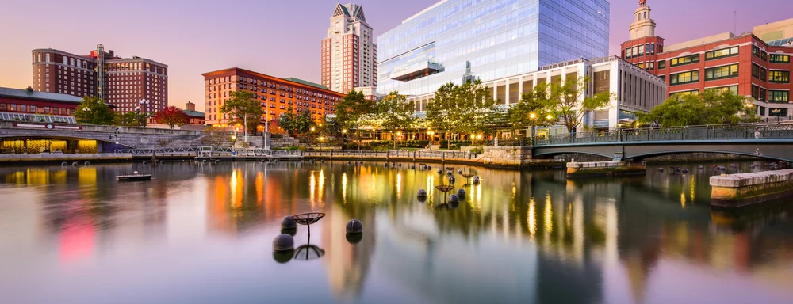

Cannabis Industry Opportunities
Rhode Island
In 2006, the Rhode Island legislature overrode the Governor’s veto to pass the Edward O. Hawkins and Thomas C. Slater Medical Marijuana Act, authorizing medical marijuana use. In 2009, the Ocean State amended the Act to authorize the creation of state-licensed compassion centers where medical marijuana could be sold. In 2016, legislators overhauled the system with Article 14, in particular introducing a new medical marijuana cultivator license and eliminating commercial sales by caregivers. The cannabis medical program is governed by the Office of Cannabis Regulation.
On May 25, 2022, Rhode Island legalized adult-use marijuana and is now legal everywhere cigarettes are permitted. Adults age 21 and older now can possess up to an ounce of cannabis, and may grow cannabis within their primary residence as stated in bill H7593. Retail sales may begin as early as Dec. 1, 2022.
H7593 is the bill that passed during the 2022 congressional session that legalized adult-use sales of cannabis inside of Rhode Island. Being dubbed "The Rhode Island Cananbis Act" H7593l outlines the framework in which recreational cannabis dispensaries will use to operate in the state. This also includes provisions to give athority to the Rhide Island Cannabis Commission to regulate and encforce licensure within the state.
Rhode Island's Cannabis Control Commission was created as the regulatory body of recreational and medical cannabis. On May 19th, 2023, Gov. Dan McKee, appointed 3 individuals to oversee the commission. With 70+ licesensee's to oversee in the state they are enforcing industry and product standards in the state.
To open a dispensary in Rhode Island, it will cost $30,000 for licensing annually. Typically, a budget of between $400,000 and $1,000,000 would be required to open a dispensary in Rhode Island, depending on facility size, operations, and location.
Below is a list of the geographic zones and the towns/cities that fall within them:
The Cannabis Control Commission of Rhode Island has not specified whether or not they intend on releasing new cultivator licenses. They will having a hearing no later than May 1, 2024 to determine it more cultivation licenses are needed.
To open a hybrid cannabis cultivation facility in Rhode Island you must already own a existing medical cannabis facility. This license is for the current medical market cannabis license to be able to sell to adult use manufacturer licenses.
Manufacturers, processors, and wholesalers fall under this category of licensure. The cannabis control commission states that the above categories falls under adult-use cannabis manufacturers license. Fees have not yet been decided for this license type please check back later for updates.
To open a dispensary in rhode island applicants will be to be a resident of the state and pay a $30,000 annual fee. Dispensaries will be divided into zones with a max of 24 retail licenses available within the entire state of Rhode Island.
To open a hybrid cannabis retailer location in rhode island applicants must currently hold a compassion centre license and pay a $125,000 annual fee. This allows the compassion centers to sell to the adult-use market. Dispensary will be divided into zones will Hybrid Cannabis Retailers having a max of 4 per zone.
In 2017, Rhode Island’s dispensaries saw medical marijuana revenues of about $30 million, with 30-percent growth projected for 2018. Rhode Island is home to over 18,000 registered medical marijuana patients as of 2018.
In 2018, the final version of the Rhode Island budget increased annual license fees for dispensaries from $5,000 to $250,000.
Call us at (702) 533-4899 or please fill out our contact form!
Book a consultation with one of our experts and let us guide you.
Rhode Islands' three existing medical marijuana dispensaries were on track to sell around $56 million in cannabis in 2019.
If you are just starting your marijuana business, the best next step is to create a Business Plan to educate your team and prepare for the marijuana business license application process.
If you are ready to apply for a Marijuana Business License in Rhode Island, please contact us or call our offices to set up an appointment. You can also explore other state opportunities or fill out our Contact Form to discuss strategies such as investment or partnership opportunities.
Our headquarters are located in the San Francisco Bay Area and Las Vegas Nevada. We offer a full suite of custom solutions for your cannabis business including business planning, license application development, and investment opportunities. If you are in need of assistance, please call us during business hours listed below. Thank you.
Operating Hours
Mon - Fri: 8am - 5pm PST
Head Office
2300 West Sahara Avenue Suite 800 Las Vegas, NV 89102

services@greenrushconsulting.com
© 2025 Green Rush Consulting LLC. All Rights Reserved.